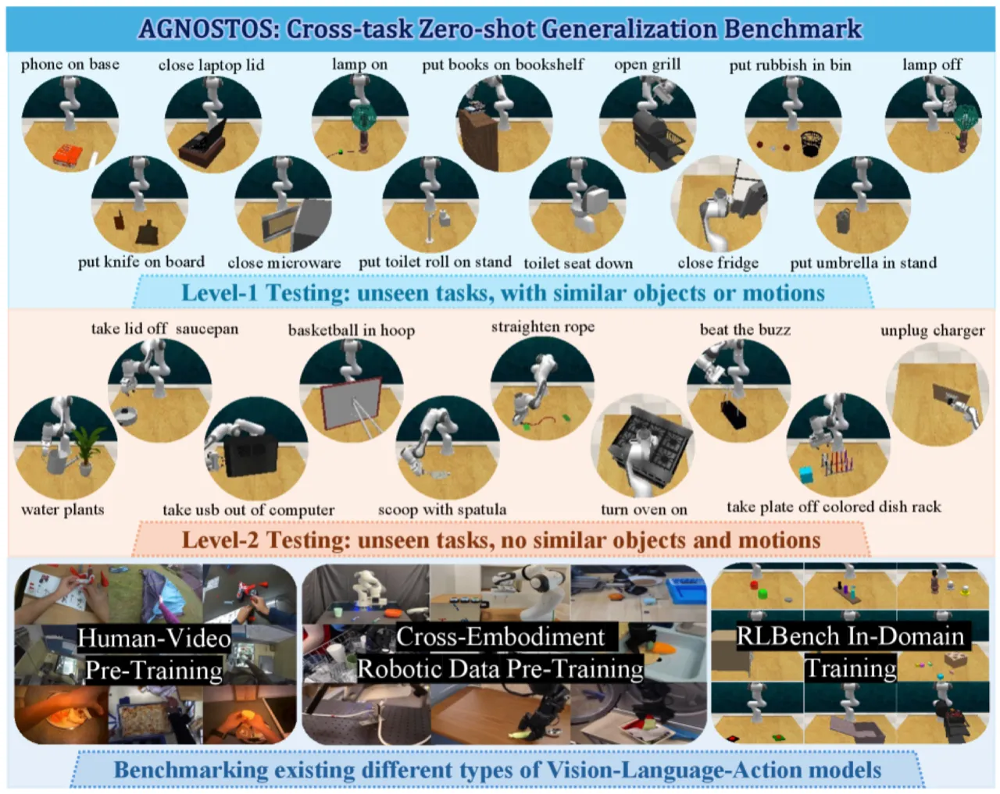
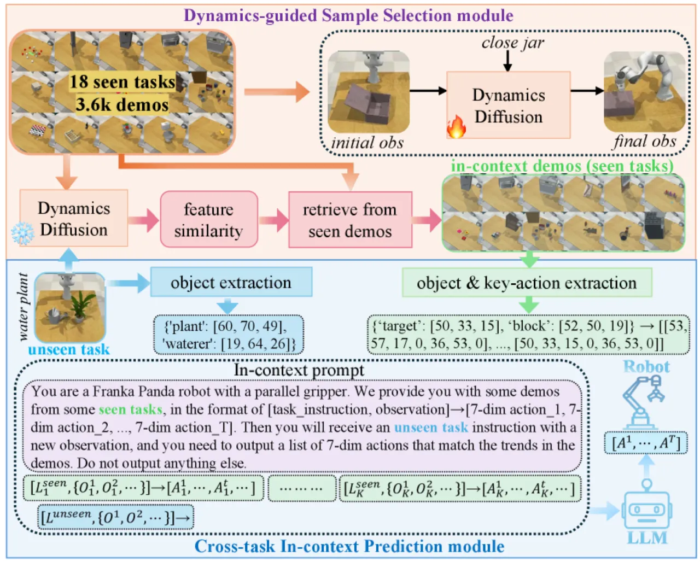
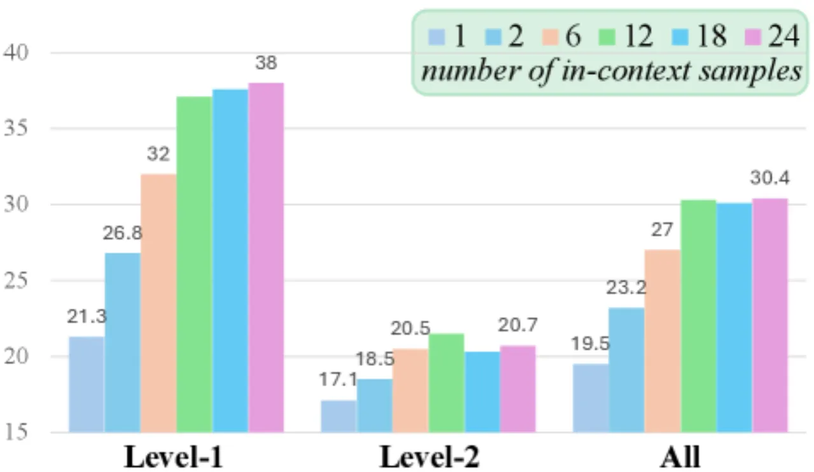
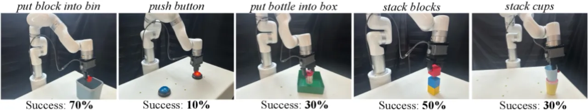

本文提出 AGNOSTOS——首个系统性评估 VLA 模型跨任务零样本泛化能力的仿真基准（23 个未见任务，两个难度级别），并提出 X-ICM（Cross-Task In-Context Manipulation）方法：利用 LLM 在已见任务示例的上下文条件下预测未见任务的动作，配合动态引导示例选择模块，大幅超越现有 VLA 基线。
通用机器人操作的核心挑战在于：模型能否将学到的技能迁移到从未见过的任务上？现有 VLA 模型（包括 π0、OpenVLA、RDT 等）的跨任务泛化能力几乎未被系统研究，缺乏统一的评估框架。
"The cross-task generalization capabilities of existing VLA models remain significantly underexplored."

现有跨任务评估基准（如 Colosseum、GemBench）缺乏对 foundation model 与人类视频预训练模型的系统比较，且未区分难度级别。AGNOSTOS 通过双难度设计和多类别 VLA 评测，首次全面揭示了当前模型的跨任务能力边界。
X-ICM（Cross-Task In-Context Manipulation）将跨任务泛化问题转化为 LLM 的上下文学习问题：将已见任务的示例"文本化"后作为 prompt，驱动大语言模型直接预测未见任务的动作序列。该方法无需对 VLA 进行额外微调，完全在推理阶段运行。

直接用语义相似性选示例效果有限，因为跨任务的关键在于动作动态而非表面语义。X-ICM 训练一个基于 InstructPix2Pix 的 dynamics diffusion model（记为 𝒢），以初始视觉观测和语言描述为条件，预测任务完成时的最终视觉状态。提取其 language feature（flang）与 visual feature（fvis.in）的组合作为动态特征表示，然后通过余弦相似度从所有已见示例中检索 K=18 条最相关的跨任务演示。该模块显著提升了示例的相关性，降低了预测方差。
将选出的 K 条示例"文本化"为结构化 prompt：每条示例表示为（语言描述, 对象位置信息）→（归一化 3D 动作坐标序列）的映射。将 prompt 输入 LLM（Qwen2.5-7B 或 Qwen2.5-72B），要求其推断未见任务的动作模式并输出相应的动作坐标。整个流程不修改 VLA 模型权重，推理时间开销主要来自 LLM forward pass。
在 AGNOSTOS 基准的 23 个未见任务上进行零样本跨任务评测，并在 5 个真实物理场景中验证 X-ICM 的迁移能力。所有成功率均为多次运行的均值 ± 标准差。
| 方法 | Level-1（13 任务） | Level-2（10 任务） | Overall（23 任务） |
|---|---|---|---|
| VoxPoser | 20.9% ± 0.3 | 8.0% ± 0.3 | 15.6% ± 0.2 |
| π0（prior best） | 21.7% ± 0.4 | 11.5% ± 0.5 | 17.5% ± 0.4 |
| SAM2Act | 14.4% ± 0.5 | 15.9% ± 1.3 | 15.1% ± 0.8 |
| X-ICM（7B） | 28.6% ± 1.9 | 16.9% ± 1.3 | 23.5% ± 1.6 |
| X-ICM（72B） | 37.6% ± 1.4 | 20.3% ± 1.7 | 30.1% ± 1.0 |
X-ICM（72B）在 Overall 上超越 π0 约 +6.0%，超越 VoxPoser 约 +7.9%。更重要的是，X-ICM（72B）是唯一在全部 23 个任务中均获得非零成功率的方法，而其他基线模型在 ≥8 个任务上完全失败。
| 配置 | Level-1 | Level-2 | Overall |
|---|---|---|---|
| X-ICM（72B）无选择模块 | 30.7% ± 4.7 | 18.0% ± 2.2 | 25.2% ± 3.2 |
| X-ICM（72B）含选择模块 | 37.6% ± 1.4 | 20.3% ± 1.7 | 30.1% ± 1.0 |
动态引导选择模块将 Overall 从 25.2% 提升至 30.1%（+4.9%），同时将标准差从 ±3.2 显著降至 ±1.0，表明该模块不仅提升了性能，还大幅增强了预测的稳定性。此外，上下文示例数量 K 在超过 12 条后性能趋于饱和。


X-ICM 将视觉信息压缩为对象坐标文本，原文指出 "the use of visual information is limited to textualizing object information, which may ignore important visual context in the raw data"。这意味着纹理、形状、场景上下文等精细视觉线索无法被 LLM 直接利用，对于需要精细视觉感知的任务（如区分相似外观物体）效果受限。
原文指出 "X-ICM's performance on many unseen tasks...remains limited due to LLMs' challenges in extrapolating beyond pre-training data"。当未见任务的概念完全超出 LLM 的预训练分布时，其动作推断能力将显著退化，特别是 Level-2 中具有全新对象和动作原语的任务。
真实世界"clean the table"任务的整体成功率仅为 5%，原因是多步骤串联任务中各子步骤的错误相互叠加。这是 in-context 预测框架的固有缺陷：无法在线修正中间步骤的偏差。
Level-2 中同时包含新对象与新动作原语的任务对所有方法均构成最大挑战。X-ICM（72B）在 Level-2 的 20.3% 成功率虽优于基线，但仍远低于 Level-1 的 37.6%，反映出当前 LLM 的跨任务外推能力边界。